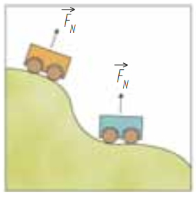
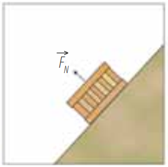

Un cuerpo cualquiera esta sujeto a diferentes tipos de fuerzas, las cuales tienen su comportamiento y su análisis en función de la causa que origina dichas fuerzas.
El peso de los cuerpos
Una de las fuerzas básicas de la naturaleza es la interacción gravitacional. Todo cuerpo que se encuentre en la proximidad de la Tierra experimenta una fuerza de atracción gravitacional. Esta fuerza ejercida por la Tierra sobre los objetos se denomina peso (w) y el vector que la representa se considera dirigido hacia el centro de la Tierra.
En las siguientes figuras vemos el vector peso.
El peso de los cuerpos se calcula con una forma similar a la ecuación de la segunda ley de Newton
\( \vec w=m\cdot{g} \)
Donde:
w - es el peso del cuerpo (Newtons - N)
m - es la masa del cuerpo (kilogramos - kg)
g - es la aceleración de la gravedad (-9.81 m/s2)
Ejemplo 1. Encontrar:
a. El peso de un bloque de 72 kg.
b. La masa de una persona cuyo peso es de -150 N.
Datos:
mb = 72 kg
wb = ?
wp = -150 N
mp = ?
a) El peso del bloque
\( \vec w=m\cdot{g} \)
\( \vec w=(72\,kg)(-9.81\,m/s^2) \)
\( \vec w=-705.6\,N \)
b) La masa de la persona
\( \vec w=m\cdot{g} \)
\(\displaystyle m=\frac {\vec w}{g} \)
\(\displaystyle m=\frac {-150\,N}{-9.81\,m/s^2} \)
\( m=15.3\,kg \)
Ejemplo 2. El peso de una persona en la Tierra es -600 N. Determinar:
a. La masa de la persona.
b. El peso de la persona en la Luna, donde la aceleración de la gravedad es -1.6 m/s2.
Datos:
wp = -600 N
gL = -1.6 m/s2
mp = ?
a) La masa de la persona
\( \vec w=m\cdot{g} \)
\(\displaystyle m=\frac {\vec w}{g} \)
\(\displaystyle m=\frac {-600\,N}{-9.81\,m/s^2} \)
\( m=61.2\,kg \)
b) El peso en la luna
\(\vec w=m\cdot{g} \)
\(\vec w=(61.2\, kg)(-1.6\,m/s^2) \)
\(\vec w=-97.9\,N \)
Fuerza normal
Todo cuerpo situado sobre una superficie experimenta una fuerza que esta le ejerce. Esta fuerza se denomina fuerza normal o simplemente normal. La fuerza normal \(\mathbf{\color{Blue} \vec {F}_{N} }\) es perpendicular a la superficie que la ejerce.
Cuando el plano sobre el cual está situado el cuerpo es horizontal, la normal es opuesta al peso, pero no ocurre así cuando el plano es inclinado. En la siguiente figura se observan algunas representaciones de la fuerza normal.

Fuerza de rozamiento
Un cuerpo que se desplaza sobre una superficie o sobre otro cuerpo, experimenta una fuerza opuesta al sentido de su movimiento, dicha fuerza es ejercida por la superficie de contacto y se denomina fuerza de rozamiento o fuerza de fricción \(\mathbf{\color{Blue} \vec{F}_{r} }\), la cual se representa opuesta a la velocidad.
Este fenómeno se debe a que las superficies de contacto no son perfectamente lisas, sino que presentan rugosidades que encajan aleatoriamente entre sí, produciendo esta fuerza que se opone al movimiento.
Aunque el rozamiento disminuye notablemente el rendimiento de ciertos mecanismos como el de los pistones de un motor, en algunas ocasiones es útil pues si no existiera la fricción varios sistemas no funcionarían, como, por ejemplo, los frenos de los automóviles.
Fuerza de rozamiento estático
Si al intentar mover un objeto, empujándolo, este permanece inmóvil, se puede afirmar que la aceleración del vehículo es igual a cero, debido a que la suma de las fuerzas que actúan sobre él es igual a cero.
La fuerza, \(\mathbf{\color{Blue} \vec{F} }\), que se ejerce sobre él se equilibra con la fuerza de rozamiento, \(\mathbf{\color{Blue} \vec{F}_{r} }\), puesto que el objeto permanece inmóvil. A este tipo de rozamiento se le denomina fuerza de rozamiento estático.
Mientras el objeto no se mueva, tenemos que \(\mathbf{\color{Blue} \vec{F}=\vec {F}_{r} }\).
El valor de la fuerza de rozamiento estático alcanza un valor máximo que se conoce como fuerza máxima de rozamiento estático, siendo este el valor alcanzado en el momento en que el automóvil empieza a moverse.
La fuerza máxima de rozamiento estático es proporcional a la fuerza que se ejercen mutuamente las superficies en la dirección perpendicular a ellas.
Cuando un objeto se encuentra sobre una superficie, la fuerza perpendicular que la superficie le ejerce es la fuerza normal \(\mathbf{\color{Blue} \vec{F}_{N} }\).
Por ende,
\( \vec{F}_{r\,estático}=\mu_e\cdot\vec {F}_{N}\)
\(\mathbf{\color{Blue} \mu_e }\) se denomina coeficiente de rozamiento estático y su valor, que por lo general es menor que 1, depende de la textura de las superficies en contacto.
Tanto \(\mathbf{\color{Blue} \vec{F}_{r\,estático} }\) como \(\mathbf{\color{Blue} \mu_e}\) dependen de la naturaleza de las superficies que se ponen en contacto, por ejemplo \(\mathbf{\color{Blue} \mu_e}\) es diferente si las superficies en contacto son asfalto y caucho que si se trata de hielo y metal.
Por otra parte, por depender de la fuerza normal, la fuerza de rozamiento no depende del área de las superficies en contacto de los cuerpos, siempre que la naturaleza de las caras sea la misma como se muestra en la siguiente figura siguiente
Fuerza de rozamiento cinético (o dinámico)
Una vez que la fuerza aplicada sobre un objeto supera en intensidad a la fuerza de rozamiento estático, el objeto se mueve. Cuando el objeto se encuentra en movimiento, la fuerza de rozamiento es menor que la fuerza de rozamiento estático máxima. A la fuerza de rozamiento cuando los cuerpos se encuentran en movimiento se le denomina fuerza de rozamiento cinético y se representa opuesta a la dirección del movimiento.
La fuerza de rozamiento cinético es directamente proporcional a la fuerza normal. La constante de proporcionalidad que, como en el caso del rozamiento estático, depende de la naturaleza de las superficies en contacto, se llama coeficiente de rozamiento cinético \(\mathbf{\color{Blue} \mu_c}\).
En este caso tenemos:
\( \vec{F}_{r\,cinético} =\mu_c\cdot\vec{F}_{N} \)
El plano inclinado
Las superficies inclinadas como las rampas son ejemplos de planos inclinados. Un plano inclinado es una superficie plana que forma un determinado ángulo \(\alpha\) con la horizontal.
Considera que sobre un plano inclinado liso (de rozamiento despreciable) se coloca un cuerpo sujeto por un dinamómetro a la parte superior del plano tal como se muestra en la siguiente figura.
Se observa que sobre el cuerpo actúan tres fuerzas: su peso \(\mathbf{\color{Blue} (m\cdot g) }\), la fuerza normal \(\mathbf{\color{Blue} \vec{F}_{N} }\) y la fuerza que ejerce el resorte del dinamómetro \(\mathbf{\color{Blue} \vec{F} }\) . Como el cuerpo se encuentra en equilibrio bajo la acción de las tres fuerzas, se cumple que:
\(\mathbf{\color{Blue} (m\cdot g) + \vec{F}_{N} + \vec{F} = 0 }\)
Realizamos una traslación del plano cartesiano de forma que el eje x coincida con F, y el eje y coincida con la FN.
Ahora descomponemos \( (m\cdot g) \) en sus componentes en el eje x y en el eje y.
\(-(m\cdot g)_x \)
\(-(m\cdot g)_y \)
De la misma manera obtenemos las componentes de la F y de la FN.
\(F_{Nx}=0\)
\(F_{Ny}=F_N\)
\(F_x=F\)
\(F_y=0\)
Ahora realicemos la suma de componentes en x y en y, dichas sumas corresponden a las componentes x y y de la fuerza neta.
\(F_{x\,neta}=-(m\cdot g)_x + F_{Nx} + F_x \)
\(F_{x\,neta}=-(m\cdot g)_x + 0 + F = 0 \)
por lo tanto \((m\cdot g)_x = F \)
\(F_{y\,neta}=-(m\cdot g)_y + F_{Ny} + F_y \)
\(F_{y\,neta}=-(m\cdot g)_y + F_{N} + 0 = 0 \)
por lo tanto \((m\cdot g)_y = F_{N}\)
Esto muestra que la componente del peso en el eje y, \((m\cdot g)_y\) y la fuerza normal \(F_N\) son fuerzas de igual norma pero con direcciones contrarias. De la misma manera, la fuerza F que ejerce el dinamómetro y la componente del peso en el eje x, \((m\cdot g)_x\), son de igual norma pero opuestas.
La tensión
Con frecuencia, se ejercen fuerzas por medio de cuerdas o hilos. Si consideramos que estos son inextensibles, las fuerzas aplicadas sobre ellos se transmiten a los cuerpos a los cuales están unidos.
La fuerza que se transmite por medio de un hilo recibe el nombre de tensión \(\mathbf{\color{Blue} (\vec{T}) }\) y la dirección del hilo determina la dirección de la tensión.
Ejemplo 1. Un automóvil cuya masa 1 kg se mueve inicialmente con velocidad de 54 km/h y se detiene después de 10 segundos de avanzar por una vía recta. Determinar la fuerza neta que actúa sobre el.
Datos:
m = 1 kg
v = 54 km/h = 15 m/s
t = 10 s
F = ?
Si el automóvil frena con aceleración constante, podemos determinar el valor de dicha aceleración a partir de la expresión
\(\displaystyle v_f=v_o+a\cdot t\)
\(\displaystyle a=\frac{v_f-v_o}{t}\)
\(\displaystyle a=\frac{0\,m/s-15\,m/s}{10\,s}\)
\(\displaystyle a=-1.5\,m/s^2\)
Ahora calculamos la fuerza
\(\displaystyle F=m \cdot a\)
\(\displaystyle F=(1\,kg) \cdot (-1.5\,m/s^2)\)
\(\displaystyle F=1.500\,N\)
El signo menos indica que la fuerza actúa en dirección contraria al movimiento en y, en consecuencia, la velocidad del automóvil disminuye, pues la velocidad inicial era 15 m/s y la velocidad final, 0 m/s.
Ejemplo 2. A un cuerpo que tiene una masa de 3,400 g se le aplica una fuerza de 1.7 N. ¿Caul es su aceleración?
Datos:
m = 3,400 g = 3.4 kg
F = 1.7 N
a = ?
\(\displaystyle F=m \cdot a\)
\(\displaystyle a=\frac {F}{m}\)
\(\displaystyle a=\frac {1.7\,N}{3.4\,kg}\)
\(\displaystyle a=0.5\,m/s^2\)
Recursos adicionales
Haz click en el siguiente enlace para ver tutoriales relacionados con el tema.